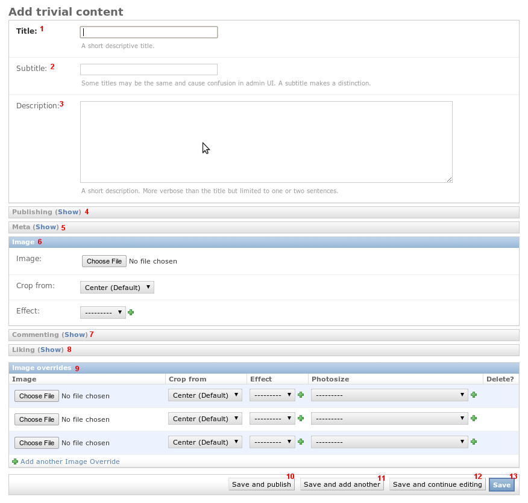
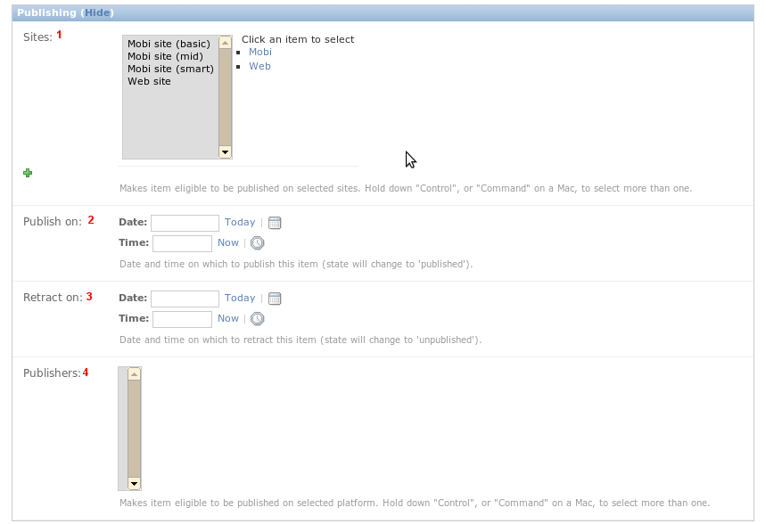
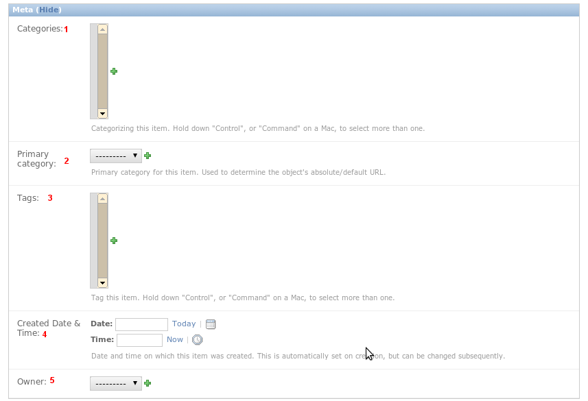
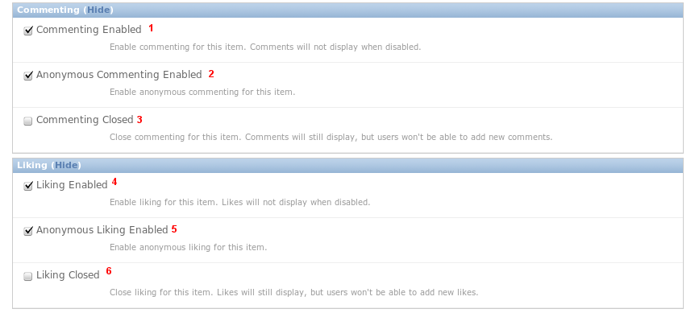

ModelBase
Jmbo itself has no content type. For our purposes assume a trivial content type
called Trivial Content which subclasses ModelBase.

Title is self-explanatory.
Subtitle is an optional field that is only visible in the admin interface.
If you have two items with the same title (a common case in multilingual sites)
then add extra text in the subtitle to distinguish between the items.
Description is an optional field. It is good practice to set it since
sites like Facebook read it when content is shared.
See below.
See below.
You should always attempt to set an image since sites look dull without them!
All popular formats up to 1MB in size are supported. An aspect ratio of 4:3
is preferred but an attempt is made to convert the uploaded image into
a 4:3 format. Applications may override this aspect ratio as they wish.
Crop from and Effect are for advanced use. Crop from is used when the
default cropping algorithm is eg. chopping a person’s head off.
See below.
See below.
Image overrides are for advanced use. The image you upload in 6 is
converted behind the scenes into potentially many sizes. If the algorithm
produces undesirable results you can override each size as required.
Save and publish saves the item and makes it publicly accessible.
Save and add another saves the item. You are redirected to a screen to
add a new trivial content item.
Save and continue editing saves the item. You stay on the edit screen.
Save saves the item. You are redirected to a listing of all trivial
content items.

- Jmbo uses the Django sites framework. This means items can be selectively
published to one or more sites. Select the applicable sites, or use the
shortcuts to select a group of sites.
- Publish on is an optional date on which to publish the item. If you leave
it empty you must publish the item manually, eg. by clicking Save and
publish.
- Retract on is an optional date on which to retract the item. If you leave
it empty you must unpublish the item manually, eg. by clicking Save and
unpublish.
- Publishers is marked for deprecation. The idea was to publish an item to eg. Facebook. Unfortunately
those platforms often have unstable API’s, making it impractical.

- Jmbo uses categories from django-category. Categorizing an item enables
you to display it in a certain context. An example is a listing (as defined by
jmbo-foundry) of all items in a category.
- The primary category is considered the most important category. Once again it enables
you do display the item in a certain context.
- Freeform tagging of an item allows more ways of searching for it.
- Created date and time is when the item was created. If you leave it
empty it is automatically set to the current time.
- The owner of the item. The dropdown may change into an autocomplete field
if there are many people to choose from.

- Enable commenting for this item. Comments will not display when disabled.
- Enable anonymous commenting for this item.
- Close commenting for this item. Comments will still display, but users won’t be able to add new comments.
- Enable liking for this item. Likes will not display when disabled.
- Enable anonymous liking for this item.
- Close liking for this item. Likes will still display, but users won’t be able to add new likes.